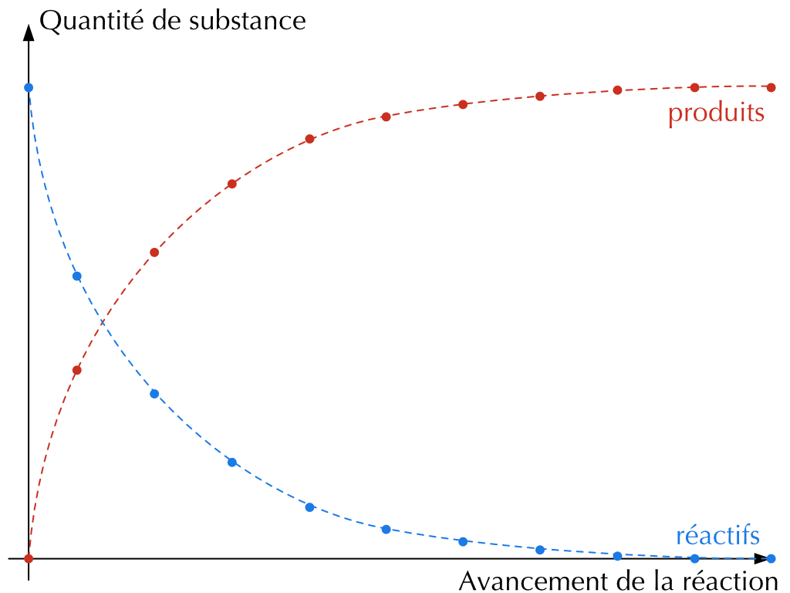
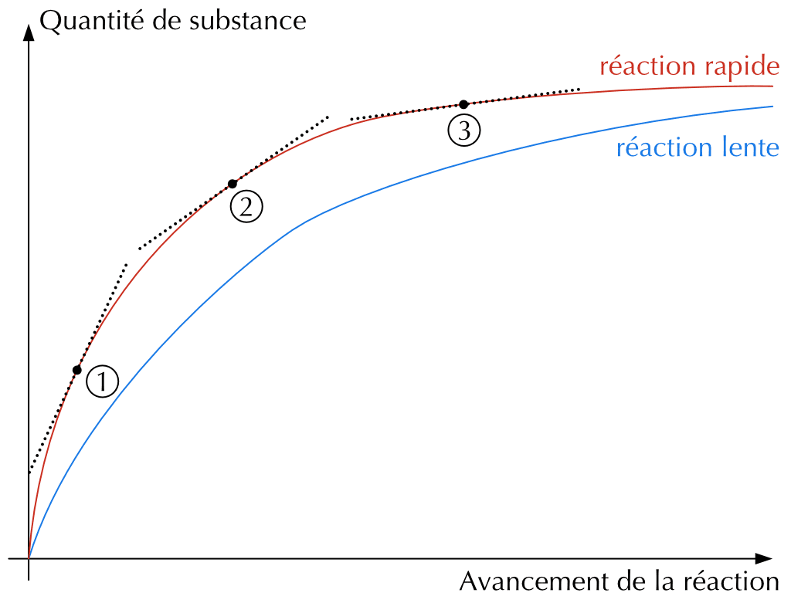
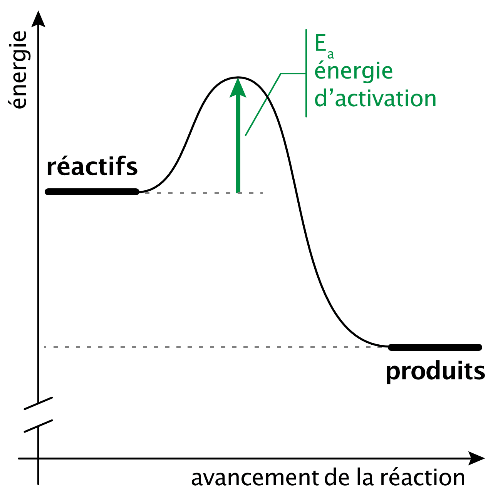
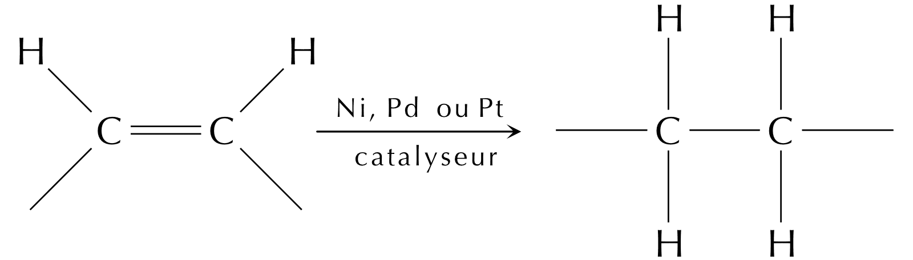

15 Cinétique chimique
- Esquisser le graphique de la variation de la concentration des réactifs et/ou produits en fonction du temps.
- Expliquer les notions de vitesse moyenne, vitesse instantanée et vitesse initiale.
- Exprimer et déterminer la vitesse d’une réaction chimique.
- Identifier les facteurs qui influencent la vitesse de réaction.
La cinétique chimique est l’étude de la vitesse à laquelle les réactions se produisent. De nombreuses réactions se produisent presque instantanément comme les combustions ou la photosynthèse tandis que d’autres se déroulent sur plusieurs jours comme l’oxydation du fer, voire des millions d’années comme la conversion du graphite en diamant.
Connaître la vitesse d’une réaction peut être primordial : la rapidité d’action d’un médicament peut faire la différence entre la vie et la mort et le temps nécessaire à la synthèse d’un produit peut faire la différence entre gains et pertes commerciales.
Vitesse de réaction
La vitesse de réaction est la variation de la quantité de réactifs ou de produits en fonction du temps.
Si une équation équilibrée est essentielle pour effectuer des calculs stœchiométriques, elle ne nous dit rien sur la vitesse à laquelle la réaction se déroule. Toutes les réactions ont des vitesses différentes dans des conditions différentes et des règles ont été établies afin de pouvoir exprimer ces vitesses.
Considérons l’équation générale qui représente une réaction chimique :
\[ \text{réactifs} \rightarrow \text{produits} \]
Une réaction chimique se déroule de manière progressive. On peut suivre l’évolution d’une réaction en observant la diminution de la quantité de réactifs ou l’augmentation de la quantité de produits dans le temps. Au début, il n’y a que des particules de réactifs et pas de particules de produits. Par la suite, les particules de produits apparaissent au fur et à mesure qu’elles sont formées et les particules de réactifs disparaissent au fur et à mesure qu’elles sont consommées.
15.1 Exprimer la vitesse d’une réaction
Mesurer la vitesse d’une réaction c’est mesurer les changements de quantité de réactifs ou de produits par unité de temps. Il existe différentes façons de déterminer la vitesse d’une réaction. La méthode choisie dépendra généralement des réactifs et des produits impliqués et de la facilité avec laquelle il est possible de mesurer leurs changements. On peut mesurer :
- la masse - la vitesse sera alors exprimée en g/s ou g/min (p. ex.),
- le volume - la vitesse sera alors exprimée en cm3/s ou cm3/min (p. ex.),
- la quantité de matière - la vitesse sera alors exprimée en mol/s ou mol/min (p. ex.),
- la concentration - la vitesse sera alors exprimée en mol·l-1·s-1 ou mol·l-1·min-1 (p. ex.).

\[ \text{Vitesse de réaction} = \frac{\Delta \text{concentration}}{\Delta \text{temps}} \]
\[ \begin{split} \text{vitesse} &= - \frac{\Delta |\text{réactifs}|}{\Delta \text{temps}} \\[1em] \Delta \text{temps} &= t_2 - t_1 \\ \Delta |\text{réactifs}| &= |\text{réactifs}|_2 - |\text{réactifs}|_1 \\[1em] (\text{signe négatif} &\Rightarrow \text{consommation}) \end{split} \qquad \begin{split} \text{vitesse} &= + \frac{\Delta |\text{produits}|}{\Delta \text{temps}} \\[1em] \Delta \text{temps} &= t_2 - t_1 \\ \Delta |\text{produits}| &= |\text{produits}|_2 - |\text{produits}|_1 \\[1em] (\text{signe positif} &\Rightarrow \text{production}) \end{split} \]
La quantité de réactifs diminue toujours avec le temps, le terme \(\Delta |\text{réactifs}|\) sera toujours plus petit que zéro. Comme on exprime les vitesses de réaction par des valeur positives, la vitesse de consommation d’un réactif est précédée d’un signe négatif pour que la vitesse soit positive.
Il faut également tenir compte des proportions des réactifs et des produits lorsqu’on exprime une vitesse de réaction. Prenons une réaction dans laquelle les coefficients stœchiométriques sont différents :
\[ A + 3\ B \rightarrow 2\ D \]
La concentration de B diminue trois fois plus vite que la concentration de A. La concentration de D augmente deux fois plus vite que celle de A ne diminue. On peut donc généraliser l’influence des coefficients stœchiométriques.
En considérant la réaction générique suivante :
\[ a\ A + b\ B \rightarrow c\ C + d\ D \]
On peut écrire :
\[ \text{vitesse} = - \frac{\Delta |A|}{a \cdot \Delta t} = - \frac{\Delta |B|}{b \cdot \Delta t} = \frac{\Delta |C|}{c \cdot \Delta t} = \frac{\Delta |D|}{d \cdot \Delta t} \]
Ecrivez l’expression de la vitesse de réaction pour chacune des réactions suivantes en fonction de chaque réactif et produit :
- \(4\ NH_3 + 3\ O_2 \rightarrow 2\ N_2 + 6\ H_2O\)
- \(2\ O_3 \rightarrow 3\ O_2\)
- \(CO_2 + 2\ H_2O \rightarrow CH_4 + 2\ O_2\)
\[ \text{vitesse} = - \frac{\Delta |NH_3|}{4 \cdot \Delta t} = - \frac{\Delta |O_2|}{3 \cdot \Delta t} = \frac{\Delta |N_2|}{2 \cdot \Delta t} = \frac{\Delta |H_2O|}{6 \cdot \Delta t} \]
\[ \text{vitesse} = - \frac{\Delta |O_3|}{2 \cdot \Delta t} = \frac{\Delta |O_2|}{3 \cdot \Delta t} \]
\[ \text{vitesse} = - \frac{\Delta |CO_2|}{\Delta t} = - \frac{\Delta |H_2O|}{2 \cdot \Delta t} = \frac{\Delta |CH_4|}{\Delta t} = \frac{\Delta |O_2|}{2 \cdot \Delta t} \]
Lors de la formation du méthane à partir de CO2 et d’eau :
\[ CO_2 + 2\ H_2O \rightarrow CH_4 + 2\ O_2 \]
En laboratoire, un chimiste mesure que la vitesse de formation de CH4 est de 0.27 \(\ \mathrm{\frac{mol}{l \cdot s}}\).
A quelle vitesse le CO2 est-il consommée ?
A quelle vitesse le dioxygène se forme-t-il ?
\[ \text{vitesse} = - \frac{\Delta |CO_2|}{\Delta t} = - \frac{\Delta |H_2O|}{2 \cdot \Delta t} = \frac{\Delta |CH_4|}{\Delta t} = \frac{\Delta |O_2|}{2 \cdot \Delta t} = 0.27 \ \mathrm{\frac{mol}{l \cdot s}} \]
\(v_{CO_2} = v_{CH_4} = 0.27 \ \mathrm{\frac{mol}{l \cdot s}}\)
\(v_{O_2} = 2 \cdot v_{CH_4} = 0.54 \ \mathrm{\frac{mol}{l \cdot s}}\)
La plupart des réactions ralentissent au fur et à mesure que les réactifs sont consommés. La vitesse instantanée d’une réaction varie continuellement avec l’avancement de la réaction. On peut donc définir la vitesse instantanée d’une réaction comme la pente de la tangente à la courbe de concentration en fonction du temps à n’importe quel instant.

La vitesse instantanée mesurée au début de la réaction (t = 0) est appelée vitesse initiale.
On suit la concentration d’un réactif A au cours d’une réaction. On mesure :
- temps (s) : 0, 10, 20, 30, 40
- |A| (mol/l) : 1.00, 0.60, 0.38, 0.25, 0.20
- La concentration de A augmente-t-elle ou diminue-t-elle ? Décrivez l’allure de la courbe |A| en fonction du temps.
- Calculez la vitesse moyenne de consommation de A entre \(t = 0\) et \(t = 20\) s.
- La vitesse de la réaction est-elle plus grande au début ou vers la fin ? Justifiez à l’aide des données.
- La concentration de A diminue au cours du temps (A est consommé). La courbe part de 1.00 mol/l et décroît de plus en plus lentement : elle s’aplatit progressivement.
- \[ v_{moy} = - \frac{\Delta |A|}{\Delta t} = - \frac{0.38 - 1.00}{20 - 0} = \frac{0.62}{20} = 0.031 \ \mathrm{mol\cdot l^{-1}\cdot s^{-1}} \]
- Plus grande au début : entre 0 et 10 s, |A| chute de 0.40 mol/l, alors qu’entre 30 et 40 s elle ne chute que de 0.05 mol/l. La pente (la vitesse) diminue à mesure que A est consommé ; la vitesse est maximale au début (vitesse initiale).
15.2 Énergie d’activation
Il existe une barrière d’énergie entre les réactifs et les produits qui doit être surmontée pour qu’une réaction ait lieu. La hauteur de cette barrière représente la quantité d’énergie que doivent posséder les particules pour que des collisions efficaces se produisent. Cette quantité d’énergie est appelée énergie d’activation (Ea). La valeur de l’énergie d’activation détermine la vitesse de réaction.

Plusieurs actions peuvent être menées pour aider les réactifs à franchir cette barrière énergétique et ainsi accélérer une réaction.
15.3 Lois cinétiques
Il n’existe pas de loi générale qui donne la vitesse d’une réaction en fonction de la concentration. Chaque réaction est un cas particulier dont la vitesse dépend de différents facteurs (état physique des réactifs, concentration, température et présence de catalyseurs).
La théorie des collisions permet d’expliquer intuitivement que la vitesse d’une réaction dépend de la concentration (ou de la pression) et de la température. On peut dire de manière générale que plus la fréquence des collisions entre réactifs est élevée, plus la vitesse de réaction augmente.
L’influence de la concentration et de la température concerne avant tout les réactions qui ont lieu en solution ou à l’état gazeux (homogène). Pour les réactions en milieux hétérogènes (solide-gaz, solide-liquide), la vitesse dépend surtout de la surface de contact.
15.3.1 Influence de la concentration (loi de vitesse)
La loi de vitesse de réaction permet d’exprimer quantitativement l’influence de la concentration sur la vitesse de réaction. En considérant la réaction générique suivante, à une température donnée :
\[ a\ A + b\ B \rightarrow c\ C + d\ D \]
La loi des vitesses de réaction s’exprime de la façon suivante:
\[ \begin{split} v = k \cdot |A|^m \cdot |B|^n \end{split} \qquad\qquad \begin{split} v &\text{ : vitesse de la réaction en } \mathrm{mol \cdot l^{-1} \cdot s^{-1}} \\ k &\text{ : constante de vitesse} \\ |A|, |B| &\text{ : concentration des réactifs en } \mathrm{mol \cdot l^{-1}} \\ m, n &\text{ : ordres partiels de la réaction} \\ m+n &\text{ : ordre global de la réaction} \end{split} \]
- k est une constante spécifique à la réaction étudiée et est déterminée expérimentalement.
- Une constante de vitesse plus petite indique une réaction plus lente, une constante de vitesse plus grande indique une réaction plus rapide.
- Les ordres partiels peuvent être entiers ou fractionnaires et sont déterminés expérimentalement.
- L’ordre global de la réaction est égal à la somme des ordres partiels.
La réaction \(A + B \rightarrow C\)
obéit à la loi de vitesse suivante : \(v = k \cdot |A| \cdot |B|^2\)
- Si la concentration de A est doublée, comment la vitesse change-t-elle ? La constante de vitesse changera-t-elle ?
- Quels sont les ordres partiels de A et de B ? Quel est l’ordre global de la réaction ?
- En considérant la seconde comme unité de temps, quelles est l’unité de la constante de vitesse ?
- Si la concentration de A est doublée, la vitesse de réaction double.
- La constante de vitesse ne changera pas (puisqu’elle est constante).
- Ordre partiel de A = 1. Ordre partiel de B = 2.
- Ordre global de la réaction = 1 + 2 = 3.
- \[ \begin{split} v\ \mathrm{\frac{mol}{l \cdot s}} &= k\ \text{ ?} \cdot |A|\ \mathrm{\frac{mol}{l}} \cdot |B|^2 \ \mathrm{\frac{mol^2}{l^2}} \\ \text{ ?} &= \mathrm{\frac{mol}{l \cdot s}} \cdot \mathrm{\frac{l}{mol}} \cdot \mathrm{\frac{l^2}{mol^2}} = \mathrm{\frac{l^2}{s \cdot mol^2}} \end{split} \]
15.3.2 Influence de la température (loi d’Arrhénius)
La température a généralement un effet important sur la vitesse de réaction. De manière empirique, on dit qu’autour de la température ambiante, une augmentation de 10°C double la vitesse de réaction.
La relation entre la constante de vitesse d’une réaction et la température peut être exprimée par la loi d’Arrhénius :
\[ \begin{split} k = A \cdot e^{\frac{-E_a}{R \cdot T}} \end{split} \qquad\qquad \begin{split} k &\text{ : constante de vitesse} \\ A &\text{ : facteur empirique en rapport avec le nombre de collisions par seconde } \\ E_a &\text{ : énergie d'activation en } \text{ J/mol} \\ R &\text{ : constante des gaz parfaits en } \mathrm{J \cdot mol^{-1} \cdot K^{-1}} \\ T &\text{ : température en } \text{ K} \end{split} \]
15.3.3 Les catalyseurs
Un autre facteur permettant d’influencer la vitesse d’une réaction est l’ajout d’un catalyseur.
Catalyseur
Un catalyseur est une substance qui accélère une réaction chimique mais qui n’est pas consommé dans la transformation.
Un catalyseur n’affecte pas le niveau d’énergie des réactifs ou des produits. Il augmente la vitesse de réaction :
- soit en abaissant l’énergie d’activation,
- soit en orientant les réactifs de manière appropriée.
Le catalyseur est utilisé en faible quantité et n’apparaît pas dans l’équation du bilan de la réaction.
Par exemple, des métaux tels que le nickel, le palladium et le platine catalysent l’hydrogénation des liaisons doubles carbone-carbone des huiles végétales pour produire de la margarine. Sans le métal catalyseur, la réaction ne se produit pas.

On distingue différents types de catalyseurs:
- Les catalyseurs homogènes - le catalyseur se trouve dans la même phase que les réactifs.
- Les catalyseurs hétérogènes - le catalyseur se trouve dans une phase différente que les réactifs.
- Les catalyseurs enzymatiques - le catalyseur est une enzyme (biochimie).
- L’auto-catalyse - un des produits de la réaction est le catalyseur de la réaction.
Les enzymes sont des catalyseurs naturels responsables d’innombrables réactions biochimiques essentielles. De nombreux procédés chimiques industriels se basent également sur les réactions catalysées et la fabrication de catalyseurs est elle-même un processus industriel.
| procédé | catalyseur |
|---|---|
| synthèse de l’ammoniac | fer |
| fabrication d’acide sulfurique | oxyde d’azote (II), platine |
| craquage du pétrole | zéolites |
| hydrogénation d’hydrocarbures insaturés | nickel, platine ou palladium |
| oxydation d’hydrocarbures dans les gaz d’échappement | oxyde de cuivre (II), oxyde de vanadium (V), platine, palladium |
Citez et expliquez brièvement (à l’aide de la théorie des collisions) l’effet des facteurs suivants sur la vitesse d’une réaction.
- une augmentation de la concentration des réactifs
- une augmentation de la température
- l’ajout d’un catalyseur
- l’augmentation de la surface de contact d’un réactif solide
- La vitesse augmente : plus il y a de particules par unité de volume, plus les collisions entre réactifs sont fréquentes.
- La vitesse augmente : les particules se déplacent plus vite, les collisions sont plus fréquentes et plus énergétiques (davantage de collisions dépassent l’énergie d’activation).
- La vitesse augmente : le catalyseur abaisse l’énergie d’activation (ou oriente mieux les réactifs), sans être consommé.
- La vitesse augmente : une plus grande surface de contact offre plus de zones où les collisions peuvent se produire (réactions hétérogènes).
15.4 Résumé
- La cinétique chimique étudie la vitesse des réactions. On suit une réaction en mesurant la variation d’une grandeur au cours du temps ; le graphique de la concentration en fonction du temps décroît pour un réactif et croît pour un produit, en s’aplatissant à mesure que la réaction ralentit.
- La vitesse moyenne se calcule sur un intervalle : \(v = -\dfrac{\Delta|\text{réactif}|}{\Delta t} = +\dfrac{\Delta|\text{produit}|}{\Delta t}\).
- La vitesse instantanée est la pente de la tangente à la courbe à un instant donné ; la vitesse initiale est la vitesse instantanée à \(t = 0\).
- Pour une réaction \(aA + bB \rightarrow cC + dD\), on tient compte des coefficients.
- La loi de vitesse exprime l’effet de la concentration sur la vitesse de réaction. Les ordres partiels, déterminés expérimentalement, donnent l’ordre global et \(k\) est la constante de vitesse propre à la réaction.
- Les facteurs qui influencent la vitesse sont : la concentration (ou la pression) des réactifs, la température, la surface de contact, l’état physique et la présence d’un catalyseur.
- Un catalyseur accélère la réaction en abaissant l’énergie d’activation, sans être consommé ni figurer dans le bilan. On distingue les catalyseurs homogènes, hétérogènes, enzymatiques et l’auto-catalyse.
15.5 Exercices supplémentaires
Une réaction \(2A + B \rightarrow\) produits obéit à la loi de vitesse \(v = k \cdot |A|^2 \cdot |B|\).
- Quel est l’ordre global de la réaction ?
- Par quel facteur la vitesse est-elle multipliée si l’on triple \(|A|\) (à \(|B|\) constant) ?
- Par quel facteur la vitesse change-t-elle si l’on triple \(|A|\) et que l’on divise \(|B|\) par deux simultanément ?
- Déterminez l’unité de la constante de vitesse \(k\) (temps en secondes, concentrations en mol/l).
- Ordre global \(= 2 + 1 = 3\).
- \(v \propto |A|^2\) : tripler \(|A|\) multiplie la vitesse par \(3^2 = 9\).
- Facteur \(= 3^2 \cdot \left(\frac{1}{2}\right)^1 = 9 \cdot 0.5 = 4.5\). La vitesse est multipliée par 4.5.
- \[ k = \frac{v}{|A|^2 \cdot |B|} = \frac{\mathrm{mol\cdot l^{-1}\cdot s^{-1}}}{\mathrm{mol^3\cdot l^{-3}}} = \mathrm{l^{2}\cdot mol^{-2}\cdot s^{-1}} \]
On admet la règle empirique : autour de la température ambiante, une augmentation de 10°C double la vitesse d’une réaction.
- Par quel facteur la vitesse est-elle multipliée si l’on augmente la température de 30°C ?
- Une réaction dure 80 minutes à 20°C. Estimez sa durée à 40°C.
- À l’aide de la loi d’Arrhénius, expliquez qualitativement pourquoi une augmentation de température accélère la réaction.
- \(+30\)°C correspond à 3 paliers de 10°C, soit un facteur \(2^3 = 8\). La vitesse est multipliée par 8.
- De 20 à 40°C, il y a \(+20\)°C, soit 2 paliers : la vitesse est multipliée par \(2^2 = 4\). La durée est donc divisée par 4 : \(80 / 4 = 20\) minutes.
- Selon la loi d’Arrhénius \(k = A \cdot e^{\frac{-E_a}{R \cdot T}}\) : quand \(T\) augmente, l’exposant \(\frac{-E_a}{R \cdot T}\) augmente (devient moins négatif), donc \(k\) augmente. Physiquement, à plus haute température, une plus grande proportion de collisions possède l’énergie nécessaire (au moins \(E_a\)) : la réaction est plus rapide.
Pour chacune des modifications suivantes appliquées à une réaction, indiquez si la vitesse augmente, diminue ou ne change pas, et justifiez brièvement.
- On dilue la solution de réactifs.
- On réduit un réactif solide en poudre fine.
- On refroidit le mélange réactionnel.
- On ajoute un catalyseur.
- On ajoute un inhibiteur.
- La vitesse diminue : la concentration des réactifs baisse, les collisions sont moins fréquentes.
- La vitesse augmente : la surface de contact augmente, offrant davantage de zones de collision.
- La vitesse diminue : les particules se déplacent moins vite, les collisions sont moins fréquentes et moins énergétiques.
- La vitesse augmente : le catalyseur abaisse l’énergie d’activation.
- La vitesse diminue : l’inhibiteur augmente l’énergie d’activation, ce qui ralentit la réaction.